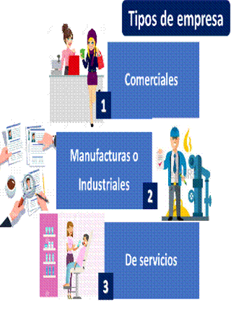

Para hablar de las transacciones y poder comprenderlas mejor, primero vamos a aclarar que existen empresas y estas se pueden dividir en las siguientes clases, de acuerdo con las actividades que realizan:
1. Empresas comerciales
Las transacciones comerciales son eventos que inician el proceso contable de registro en el sistema contable de una empresa.
En contabilidad, se registra, clasifica, resume y reporta información financiera de un individuo, negocio u organización, a los usuarios interesados. La información financiera reportada proviene de lo que se conoce como transacciones comerciales.
Para comprender la contabilidad básica, se debe estar familiarizado con el punto de partida y el núcleo del proceso contable, que es la transacción comercial. Sin una transacción comercial, no hay nada que registrar, clasificar, resumir e informar.
Una base de datos actualizada es uno de los recursos más útiles que puede ayudar para planificar nuevas estrategias de marketing y ventas.
Otros registros comerciales que deben conservarse son los documentos que proporcionan un registro de las transacciones comerciales, o que permiten el seguimiento y la verificación de estas transacciones a través del sistema de contabilidad de principio a fin.
Estos incluyen facturas, recibos, cintas de caja registradora, registros bancarios, talonarios de cheques, etc.
La esencia de un buen registro de las transacciones comerciales es una buena contabilidad. Una contabilidad eficiente ahorrará tiempo y dinero a largo plazo.
2. Empresas de manufacturas o industriales
Por otra parte, hay empresas manufactureras o industriales. Estas empresas lo que hacen es transformar y convertir insumos o materias primas, para modificarlas de algún modo y luego sacarlas a la venta; como el caso de una maquila de ropa, una fábrica de juguetes, una mueblería, entre otros.
Habitualmente el concepto hace referencia a un comercio en sentido bidireccional. Por ejemplo, España exporta aceite de oliva a Alemania y Alemania exporta coches a España.
Es prácticamente imposible que un país pueda autoabastecerse de forma eficiente. Por ello, necesita importar productos de fuera. A su vez, el resto de países necesitan de diferentes productos. A raíz de esto último, un determinado país puede exportar al exterior.
Normalmente los países se especializan en un determinado tipo de productos. Por ejemplo, España es especialista, entre otros productos, en producir aceite de oliva de gran calidad. Por tanto, es un exportador de primer orden. Del mismo modo, en Europa destaca Alemania por su potente industria del automóvil.
Cuando hablamos de comercio interindustrial no necesariamente hablamos de productos terminados. Es decir, podríamos estar ante productos intermedios necesarios para terminar un producto. Por ejemplo, para producir un teléfono móvil, las principales marcas compran a otros países determinados componentes.
3. Empresas de servicios
Además, hay empresas de servicios. Estas empresas lo que venden en el mercado son servicios, como el caso de los salones de belleza, las clínicas médicas, los bancos entre algunas de las muchas que podemos mencionar.

Claro que, todas estas empresas venden algo en el mercado, y están originando transacciones en el mercado; puesto que la palabra transacción hace relación al proceso del intercambio de bienes y servicios en términos económicos.
Por lo tanto, puede considerarse una transacción una compra, una venta, una devolución, un pago, de las muchas acciones económicas que realiza una empresa.